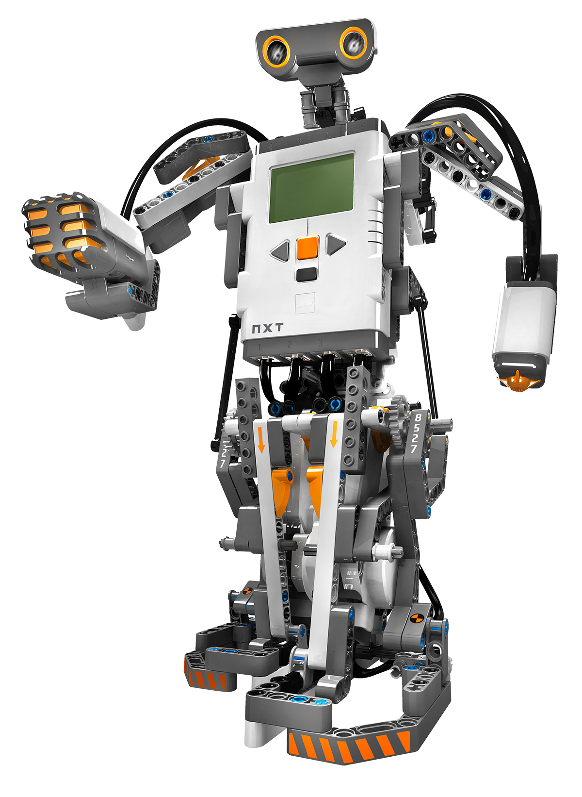

Upoznajte se sa....
Svi smo čuli predviđanja: roboti dolaze po naše poslove. I ne samo tvornički, uslužni ili isporuke - govorimo i o poslovima s bijelim ovratnicima. Jedna od djelatnosti za koju Svjetski ekonomski forum predviđa da će zahvatiti najveća svjetska gospodarstva je pravno polje. Iako bi se na površini moglo činiti nemogućim automatizirati posao koji zahtijeva rješavanje problema, kritičko razmišljanje i nagovaranje sudaca i porota, kad se uzmu u obzir brda papirologije i istraživanja koja se bave zakonima, lakše je vidjeti gdje bi strojevi mogli imati nogu gore , da se tako izrazim.

Toyota violin-playing robot

Ghost in the Shell